RAGING BULL
(1980)
Sports/Drama 8.1 93%
Director : Martin Scorsese
Cast : Robert De Niro, Joe Pesci
Famous Quote : "If you win, you win. If you lose, you still win."- Joey La Motta
Scorses and De Niro have made movies better than their boxing biopic, but its hard to argue that any of those movies feature a more jaw dropping performance than De Niro's here. It also features some of cinema's best shot fights. Scorsese used chocolate as blood in boxing scenes because it showed better in B/W.
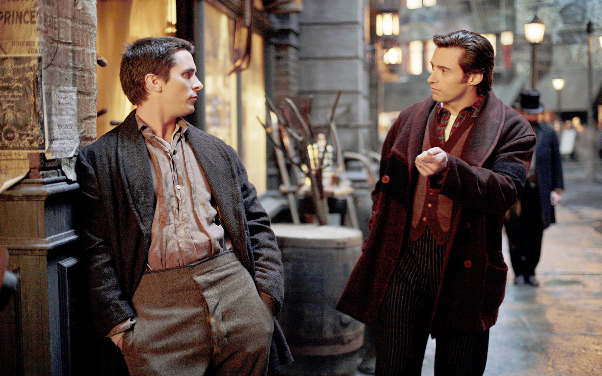
THE PRESTIGE
(2006)
Thriller/Mystery 8.5 76%
Director : Christopher Nolan
Cast : Hugh Jackman, Christian Bale
Famous Quote : "Man's reach exceeds his imagination."- Robert Angier
This was less a period thriller than a stealth sic-fi. Nolan's film tells the tricky tale of two rivals magicians practicing their art in late-Victorian london. Both are so committed to this rivalry that they make sacrifices that will bring them fame but with terrible consequences.

AMELIE
(2001)
Romance/Rom-com 8.2
Director : Jean-Pierre Jeunet
Cast : Audrey Tautou
Famous Quote : "At least you'll never be a vegetable - even artichokes have hearts."- Amelie Poulain
Despite being caught in her imaginative world, Amelie, a young waitress, decides to help people find happiness and guess what on her journey she finds love. No girl other than Audrey Tautou could play this role so perfectly. Only French film to make part in this list.

SPOTLIGHT
(2015)
Drama/History 8.1 97%
Director : Tom McCarthy
Cast : Mark Ruffalo, Rachel McAdams, Liev Schreiber, Michael Keaton
Famous Quote : "He is the lucky one, He is still alive."- Mitchell Garabedian
Spotlight is a old-style journalism triumphs in the story of the real-life team who knocked on doors and scoured the cuttings library to reveal a scandal that may have begun centuries ago. By the way, it was Academy's Best Picture.
THE DEER HUNTER
(1978)
War/Drama 8.1 93%
Director : Michael Cimino
Cast : Robert De Niro, Christopher Walken, John Cazale, John Savage
Famous Quote : "You have to think about one shot. One shot is what it's all about. A deer's gotta be taken with one shot."- Michael
This movie is both breathtakingly moving and at times a disapponting self indulgent. When John Cazale got sick during filming, the studio wanted to recast, but streep threatened to walk off the picture if it did.
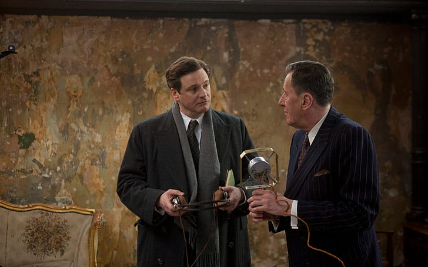
THE KING'S SPEECH
(2010)
Drama/Historical Drama 8 94%
Director : Tom Hooper
Cast : Colin Firth, Geoffrey Rush, Helena Bonham Carter
Famous Quote : "Please don't smoke. I believe sucking cigarette smoke into your lungs will kill you."-
A quarter of the world's population looked to England for leadership before W W II. But its own people doubted the competence of their stammering King.
WHEN HARRY MET SALLY
(1989)
Romance/Comedy 90%
Director : Rob Reiner
Cast : Billy Crystal, Meg Ryan
Famous Quote : "I came here tonight because when you realize you want to spend the rest of your life with somebody, you want the rest of your life to start as soon as possible."- Harry Burns
This movie talks about great acting. Timeless Romantic Classics. A story of two people who first hate each other and then become life partners.
GHOSTBUSTERS
(1984)
Comedy/Fantasy 7.8 97%
Director : Juan Reitman
Cast : Bill Murray, Dan Aykroyd, Sigourney Weaver, Harold Ramis
Famous Quote : "Don't cross the streams!"- Dr. Egon Spengler
It is a story with Gags! And it manages to wring a fantastic supernatural adventure out of that concept, while never neglecting the oppurtunity to deliver a great laugh.
TITANIC
(1997)
Romance/Drama 7.8 89%
Director : James Cameron
Cast : Leonardo De Caprio, Kate Winslet
Famous Quote : "I'll never let go, Jack. I'll never let go."- Rose
A story about 1912 sinking of world's biggest cruise liner was most expensive ever made, suffered a difficult, overrunning shoot, and was predicted to be a career-ending flop. But turned out the most successful films of all time (box office + awards) and made Cameron the King of the World.
SOME LIKE IT HOT
(1959)
Comedy/Romance 8.2 95%
Director : Billy Wilder
Cast : Marilyn Monroe, Tony Curtis, Jack Lemmon
Famous Quote : "Well, nobody's perfect!"- Osgood
A movie that features what is arguably Marilyn Monroe's best performance, not to mention one of her own finest features. This cross-dressing caper also has what must be the greatest last line in history : "Well, nobody's perfect!"
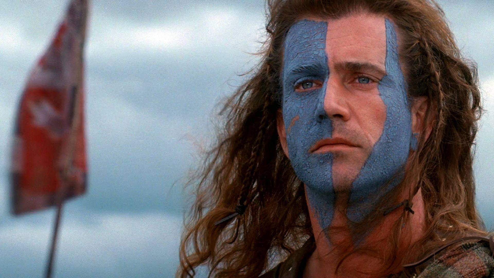
BRAVEHEART
(1995)
War/Drama 8.3 78%
Director : Mel Gibson
Cast : Mel Gibson, Sophie Marceau, Patrick McGoohan
Famous Quote : "Every man dies, not every man really lives."- William Wallace
Gibson didn't want to play the lead, he thought he was too old - but Paramount wouldn't make the film without him. Won Best Picture Oscar. Spectacular.

PAN's LABYRINTH
(2006)
Fantasy/War 8.2 95%
Director : Guillermo Del Toro
Cast : Juana Baquero, Ariadna Gil, Sergi Lopez
Famous Quote : "Her father, the King, always knew that the princess' soul would return perhaps in another body, in another place, at another time and he would wait for her, until he drew his last breath, until the world stopped turning..."- Pan
There's an earthy, primal feel to his fairy-world here, alien and threatening rather than gasp-inducing and 'magical'. Only Spanish-Language Movie here.

ROCKY
(1976)
Sport/Drama 8 94%
Director : Jon G. Avildsen
Cast : Sylvester Stallone, Talia Shire, Burt Young
Famous Quote : "Yo, Adrian! Its me Rocky."- Rocky
Stallone wrote the script's first draft in just three days, then refused to sell it unless he was cast in the lead role. The story proves that winning isn't the most important thing(you gotta go the distance).
THE PRINCESS BRIDE
(1987)
Adventure/Romance 8 97%
Director : Rob Reiner
Cast : Cary Elwes, Robin Wright, Mandy Patinkin
Famous Quote : "Hello : my name is Inigo Montoya. You killed my father, Prepare to die."- Inigo Montoya
Hardly anyone saw it in theatre but this was back when video could create a cult hit-- and that's what happened. This film includes one of the cinema's greatest swordfights, and also entertaining battles of wits.
THE TERMINATOR
(1984)
Action/Sci-fi 8 100%
Director : James Cameron
Cast : Arnold Schwarzenegge, Linda Hamilton, Michael Biehn
Famous Quote : "Cyborgs don't feel pain, I do. Don't do that again."- Kyle Reese
It features time travel and a cyborg(half robot and half human) with car chase and shoot-outs, it's all packed around the blood-covered endoskeleton of a relentless-killer horror pic.

NO COUNTRY FOR OLD MEN
(2007)
Thriller/Western 8.1 93%
Director : Coen Brothers
Cast : Javier Bardem, Josh Brolin, Tommy Lee Jones
Famous Quote : "The point is there ain't no point."- McCarthy
The Coens' squeeze us without mercy in a vise of tension and suspense. Javier Bardem makes an awesome villian.

INTERSTELLAR
(2014)
Sci-fi/Adventure 8.5 72%
Director : Christopher Nolan
Cast : Matthew McConaughey, Anne Hathaway, Jessica Chastain
Famous Quote : "Love is the only one thing that transcend time and space"- Brand
From the effects of gravity to emotional implication of time dilation, it mixes science and sentiment to great effect. And it has a sarcastic robot, too.

VERTIGO
(1958)
Thriller/Mystery 8.3 94%
Director : Alfred Hitchcock
Cast : James Stewart, Kim Novak
Famous Quote : "Only one is a wanderer, two together are always ging somewhere."- Madeleine
With James Stewart's detective stalking Kim Novak's mysterious woman, witnessing her suicide, then becoming obsessed with her double, its certainly disturbing in the most artful and inventive way.

THE DEPARTED
(2006)
Thriller/Crime 8.5 91%
Director : Martin Scorsese
Cast : Jack Nicholson, Matt Damon, Leonardo De Caprio, Mark Wahlberg
Famous Quote : "*Sniff* *Sniff*... I smell a rat."- Frank
It perfectly cast : DiCaprio and Damon as the facing-off moles, Nicholson as the Whitey Bulger-esque Mob boss and ,(arguably best), Mark Wahlberg as America's swearist cop. Scorsese cookes up a juicy and bloody steak of a movie.

WALL-E
(2008)
Animation/Family 8.4 95%
Director : Andrew Stavton
Cast : Ben Burtt, Elisa Knight, Jeff Garlin
Famous Quote : "WALL-E!"- WALL-E
The most engaging silent movie since chaplin left the screen : There's no "human" dialogue for the first 40 min. It manages to be profoundly moving and thought provoking.
MEMENTO
(2000)
Thriller/Mystery 8.4 93%
Director : Christopher Nolan
Cast : Guy Pearce, Carrie-Anne Moos, Joe Pantoliano
Famous Quote : "I can't remember to forget you."- Leonard
Nolan made the world sit up and pay attention to him by crafting a revenge fuelled crime thriller. It's precision engineered : every scene lasts as long as the span of damaged protagonist Leonard Shelby's short-term memory, as well as running in reverse order and it works.
SEVEN SAMURAI
(1954)
Action/Drama 8.6 100%
Director : Akira Kurosawa
Cast : Toshiro Mifune, Takshi Shimura
Famous Quote : "What's the use of worrying about your beard when your head's about to be taken?"- Gisaku
16th century set drama about a mottey gang of warriors uniting save a village from bandits. Later made as The Magnificient Seven , a Western with Steve McQueen and Charles Bronson.
12 ANGRY MEN
(1957)
Drama/Legal Drama 8.9 100%
Director : Sidney Lumet
Cast : Henry Fonda, Lee J. Cobb, Martin Bafsam
Famous Quote : "Bright? He's a common, ignorant slob. He don't even speak good English."- Juror #10
It's all about the value of looking at things differently, and a reminder that nothing is more important than great dialogue. This film finds all its drama inside a jury deliberation room packed with fantastic character actors. The last surviving jurist, Jack Klugman, died in 2012

WHIPLASH
(2014)
Drama/Drama 8.5 94%
Director : Damien Chazelle
Cast : J.K. Simmons, Paul Reiser
Famous Quote : "Good Job"- Terence Fletcher
It is a movie about music, but it could just as well have been about an underdog sports team. One more thing - Teller's Intensity was outstanding.
REAR WINDOW
(1954)
8.4 99%
Director : Alfred Hitchcock
Cast : James Stewart, Grace Kelly.
Famous Quote : "When two people love each other, they come together - WHAM - like two taxis on Broadway."- Stella
Photographer LB Jeffries (James Stewart) is on sick leave, with a broken leg. He's bored to tears, so he starts spying on his neighbours. Then he witnesses a murder. OR DOES HE? HITCHCOCK really know how to take a distance corker of a premise and turned it into peerless thriller. He is surely a Master of Suspense.

SPIRITED AWAY
(2001)
Animation/Fantasy 8.5 97%
Director : Hayao Miyazaki
Cast : Suzanne Pleshette, Rumi Hiragi
Famous Quote : "Something you wouldn't recognize. It's called love."- Kamaji
For a western world raised on disney movies, it was a bracing change of pace. Taking in bathovers, spirits of Shinto Folklore, and morality without clear-cut distinction of good and evil. It is ofcourse utterly beautiful, too-boundlessly imaginative, and steeped in gorgeous colour,and stunningly scored by Joe Hisaishi. Young hero, Chihiro, forced to fend for herself when her parents turned into pigs. Earn with boy-dragon-spirit Haku, her freedom from spirit-world.
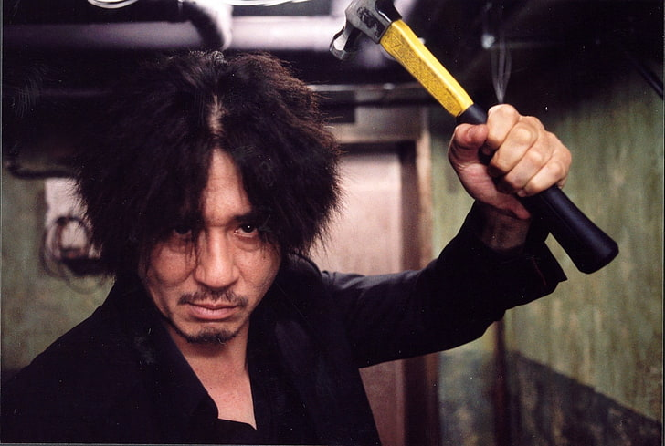
OLDBOY
(2003)
Thriller/Mysery 8.4 82%
Director : Chan-Wookpark
Cast : Choi Min-Sik, Kang Hye-Hing
Famous Quote : "Laugh and the world laaughs with you!!"- Oh Dae-Su
His revenge drama does extremity with a capital Feek. Torture through 15 years of solitary? Check. Hammer-Wielding violence? Check. Incest? Check, check. It's all part of the deliciously dark and stylishly executed journey.
RETURN OF THE JEDI
(1983)
Sci-fi/Adventure 8.3 82%
Director : Richard Marquand
Cast : Mark Hamilli, Carrie Fisher, Harrison Ford
Famous Quote : "Your thoughts betray you father!"- Luke Skywalker
This is filled with action and yet, coming after the best and emotionally richest chapter, The Empire Strikes Back
, a slight disappointment. Skywalker attempts to bring his father back to the light side of the force.

RESERVOIR DOGS
(1992)
Crime/Crime 8.3 92%
Director : Quentin Tarantino
Cast : Harvey Keitel, Tim Roth, Chris Penn, Steve Buscemi, Lawrence Tierney, Michael Madson
Famous Quote : "I didn't create the situation, I'm just dealing with it!"-
It's actually not Tarantino's debut feature; the first film he directed was 1987's My Best Friend's Birthday, much of which was destroyed in a lab fire. His terrific twist on the heist-gone-wrong thriller and centres the majority of its action around one, long and incredibly bloody death scene.
TOY STORY
(1995)
Family/Animation 8.3 100%
Director : John Lasseter Allen
Cast : Tom Hanks, Tim Allen
Famous Quote : "To infinity, and beyond!"- Buzz Lightyear
The Clue's in the title : It's a perfectly formed story, about friendship, love, fear of abandonment, workplace politics and self identity. It's ability to make you laugh is undimmed. You know that each CGI frame took from 4 to 13 hours to render at that time.
NORTH BY NORTHWEST
(1959)
Thriller/Romance 8.2 99%
Director : Alfred Hitchcock
Cast : Carry Grant, Eva Marle Saint, James Mason
Famous Quote : "Now you listen to me, I'm an advertising man, not a red herring. I've got a job, a secretary, a mother, two ex-wives and several bartenders that depend upon me, and I don't intend to disappoint them all by getting myself 'slightly' killed."- Roger Thornhill
ALIENS
(1986)
Action/Horror 8.3 97%
Director : James Cameron
Cast : Sigourney Weaver, Michael Biehn, Bill Paxton, Lance Henriksen
Famous Quote : "They mostly come at night... mostly."- Newt
Cameron's genius was to not try to top the original as one of the greatest ever horror movies instead transplanted the Alien to different genre, and created one of the greatest ever action movie. 'Truly great cinema'.
GLADIATOR
(2000)
Action/Adventure 8.5 77%
Director : Ridley Scott
Cast : Russell Crowe, Joaquin Phoenix, Oliver Road
Famous Quote : "What we do in life echoes in eternity."- Maximus
It was Crowe's big entrance as a Hollywood star (he won an Oscar), such astounding scope and sweep and such masterful storytelling.
THE THING
(1982)
Horror/Sci-fi 8.1 84%
Director : John Carpenter
Cast : Kurt Russell, Keith David, Wifford Brimley
Famous Quote : "Maybe we at war with Normay"- Navls
John crafted an intense, frosty, sci-fi thriller featuring Hollywood's ultimate movie monster one that could be any of us at any time, before conterting into a genuine biological nightmare.

THE LION KING
(1994)
Family/Animation 8.5 93%
Director : Roger Allers
Cast : Matthew Broderick, Jeremy Irons, James Earl Jones
Famous Quote : "When we die, our bodies become the grass, and the antelope eat the grass. and so we are all connected in the great circle of life"- Mufasa
It was the top-grossing animated film until 2010(Toy Story 3). Though we shouldn't be too surprised- it remains one of Disney's most beautifully rendered films, with catchy songs and still one of the most distressing death scenes in a kids' movie.
DIE HARD
(1988)
Action/Thriller 8.2 93%
Director : John McTiernan
Cast : Bruce Willis, Alan Rickman, Bonnie Bedelia
Famous Quote : "Yippee Ki-Yay, Motherf*cker!"- John McClane
One man using only his wits and whatever he can extract from his environment. A gang of bad guys terrorising the locals in a skyscraper. It convinced the world a TV-comedy star could be an action-hero.
L.A. CONFIDENTIAL
(1997)
Crime/Crime 8.2 99%
Director : Curtis Hanson
Cast : Guy Pearce, Russell Crowe, Kim Basinger, Kevin Spacey
Famous Quote : "It's off the record, on the OT, and very Hush-Hush"- Sid
Highly praised by critics. Acted to perfection with more twists than you can shake a stick at.
BICYCLE THIEVES
(1948)
Drama 8.2 98%
Director : Vittorio De Sica
Cast : Enzo Staiola, Lamberto Maggiorani, Lianella Carell
Famous Quote : "Thief! Thief! Stop him!"- Antonio
A simple tale of a man whose bike is stolen when his job and life depends upon it. Tragic sensibility with a quiet undercurrent of hope.

THE BREAKFAST CLUB
(1985)
Drama/Teen 7.9 89%
Director : John Hughes
Cast : Emilio Estenez, Judd Nelson, Molly Ringwald, Anthony Michael Hall, Paul Gleason, John Kapelos, Ally Sheedy
Famous Quote : "We're all pretty bizarre. Some of us are just better at hiding it, that's all."- Andrew
This film is an earnest, engaging attempt at portraying teens and their problems is a realistic light.

THE BIG LEBOWSKI
(1998)
Comedy/Indie Film
Director : Joel and Ethan Coen
Cast : Jeff Bridges, John Goodman, Julianne Moore
Famous Quote : "I'm the Dude, so that's what you call me."- The Dude
Coen Brothers arguably made the funniest movie of that decade. They also manage to construct a kidnap mystery in which the detective isn't a detective and nobody was actually kidnapped.

12 YEARS A SLAVE
(2013)
Drama/History 8.1 95%
Director : Steve McQueen
Cast : Chiwetel Ejiofor, Michael Fassbender
Famous Quote : "You will not live to see another day!"- Tibeats
It is based on true story of Solomon Northup drives straight to the heart of the cruelties of oppression.
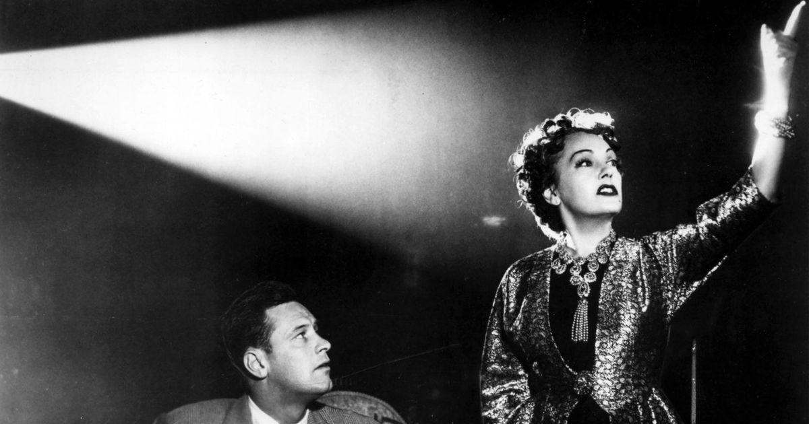
SUNSET BLVD.
(1950)
Noir/Drama 8.4 98%
Director : Billy Wilder
Cast : William Holden, Gloria Swanson
Famous Quote : "All right, Mr. De Mille, I'm ready for my close up."- Norma Desmond
You would be surprised to know that a dead guy narrated it. The performances do justice to the ruthlessly witty script. It is the story plotted when the Hollywood has completely moved on from the silent film era.
ETERNAL SUNSHINE OF THE SPOTLESS MIND
(2004)
Romantic/Sci-fi 8.3 93%
Director : Michel Gondry
Cast : Jim Carrey, Kate Winslet
Famous Quote : "Why do we fall in every woman I see who showed me the least bit of attention?"- Joel Barish
This film revived the career of Winslet. Jim Carrey's Joey races through his own mind to reverse a process by which all his memories of his failed relationshp with Kate Winslet's Clementine are to be erased.

AMERICAN BEAUTY
(1999)
Romantic/Drama 8.3 87%
Director : Sam Mendes
Cast : Kevin Spacey, Annelle Bening
Famous Quote : "Remembers those posters that said,'Today is the first day of the rest of your life?' Well that's true for every day but one - the day you die."- Lester Burnham
This is a story of Lester Burnham : a man who turned his midlife crisis into a midlife resolution - even if his self - liberating antics would ultimately drove disastrous.
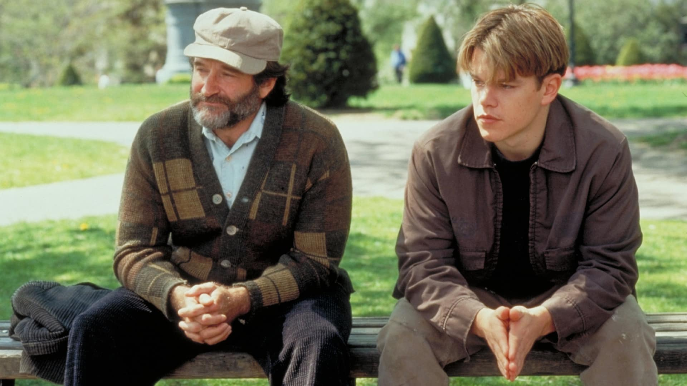
GOOD WILL HUNTING
(1997)
Drama/Romance 8.3 97%
Director : Gus Van Sant
Cast : Robin Williams, Matt Damon, Ben Affleck, Minnie Driver
Famous Quote : "It's not your fault!!"- sean Maguire
A heartfelt story of a friendship between a troubled math genius and his unconventional counseller. Remember when young actor buddies Matt and Ben won Oscar for Best Original Screenplay? What happened to those guys? anyway. By the way, Original climax was Damon and Driver drive into the sunset.

A CLOCKWORK ORANGE
(1971)
Drama/Sci-fi 8.2 87%
Director : Stanley Kubrick
Cast : Molcolm McDowell, Patrick Magee
Famous Quote : "It's funny how the colors of the real world only seem really real when you viddy them on the screen."- Alex
It's the film that started debate over violence in cinema. The Singin' In The Rain sequence, which remains one cinema's most deeply upsetting.
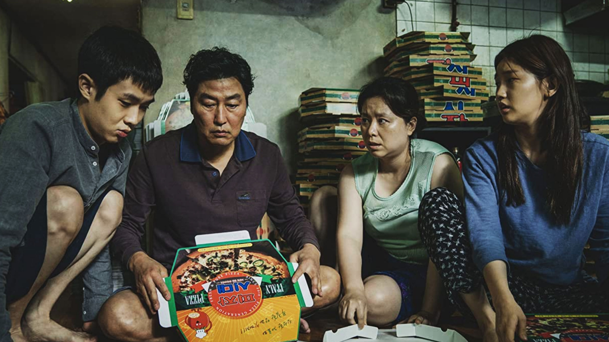
PARASITE
(2019)
Thriller/Comedy 8.6 99%
Director : Bong Joon-Ho
Cast : Cho Yoo-Jeong, Park So-Dam, Choi Woo-Shik<, Jeong Ji-So/p>
Famous Quote : "So we're all gathered here today to celebrate the reconnection of our phones and this bounteous Wi-fi."-
In Bong's flawless tragicomedy, a poor yet united family bluff their way into the lives of a wealthy seoul household. It took 4 Oscars including Best Picture.

LIFE IS BEAUTIFUL
(1997)
War/Romance 8.6 80%
Director : Robert Benigni
Cast : Robert Benigni, Nicoletta Braschi, Giorgio Cantarini
Famous Quote : "Nothing is more necessary than the unnecessary."- Uncle
Father shields his son from Nazi's horror with comedy, indomiability of humanity even in midst of inhumanity. A very good movie.
PATHER PANCHALI
(1955)
Drama 8.6 98%
Director : Satyajit Ray
Cast : Subir Banerjee, Karuna Banerjee, Chunibala Devi
Famous Quote : "Can't an old woman have wishes too?"- Chunibala
Ray captures the rhythms of life in a poor, rural village in minute detail, filtering family experiences through the eyes of a young boy. It's no wonder, It became the first Indian film to achieve widespread international acclaim and establish young Ray as a master filmmaker.

MAD MAX : FURY ROAD
(2015)
Action/Adventure 8.1 97%
Director : George Miller
Cast : Tom Hardy, Charlize Theron
Famous Quote : "Remember me?"- Furiaso
Stripping the chase movie down to its raw essentials(the plot is basically : run away... then run back again!), Miller expertly built the narrative through some of the most astonishing and gloriously operatic action scene.
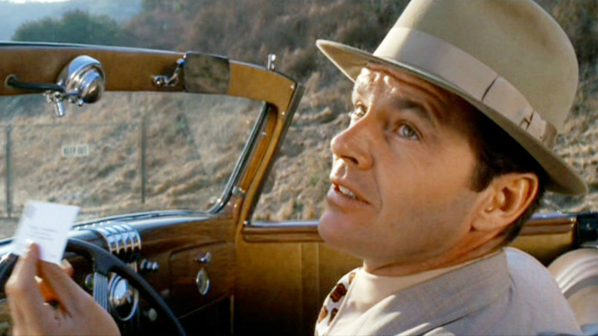
CHINATOWN
(1974)
Mystery/Crime 8.1 99%
Director : Roman Polanski
Cast : Jack Nicholson, Faye Dunaway
Famous Quote : "Course I'm respectable. I'm old. Politicians, ugly buildings, and whores all get respectable if they last long enough."- Noah Cross
It is a visually lavish trip back into the hard bolied detective genre. A never-bettered noir masterpiece.

SAVING PRIVATE RYAN
(1998)
War/Drama 8.5 93%
Director : Steven Spielberg
Cast : Tom Hanks, Matt Damon, Edward Burns, Tom Sizemore
Famous Quote : "I just know that every man I killed the farther away from home. I feel."- Captain Miller
The blood spilling, visceral power of its Omaha Beach D-Day-landing opening act ensured that Spielberg's fourth W W II movie set the standard for all future battle depictions.

PYSCHO
(1960)
Horror/Thriller 8.5 96%
Director : Alfred Hitchcock
Cast : Anthony Perkins, Janet Leigh
Famous Quote : "A boy's best friend is his mother."- Norman Bates
Hitch's serial killer thriller was a shocker-- but not just because of the shower scene, but first to show a toilet in a movie. This invented a genre : The psycho-killer slasher movie. No longer were movie monsters just big, hairy wolf-men, or vampires. They could now look completely normal. They could be the guy sat right next to you, in fact...

THE PIANIST
(2002)
War/Drama 8.5 95%
Director : Roman Polanski
Cast : Adrien Brody, Thomas Kretschmann, Emilia Fox
Famous Quote : "If I'm going to die, I prefer to die in my own home."- Brody
The Loneliness, guilt and impotenseon Brody's face is haunting. His performance is extraordinary. Well acted and dramatically moving.
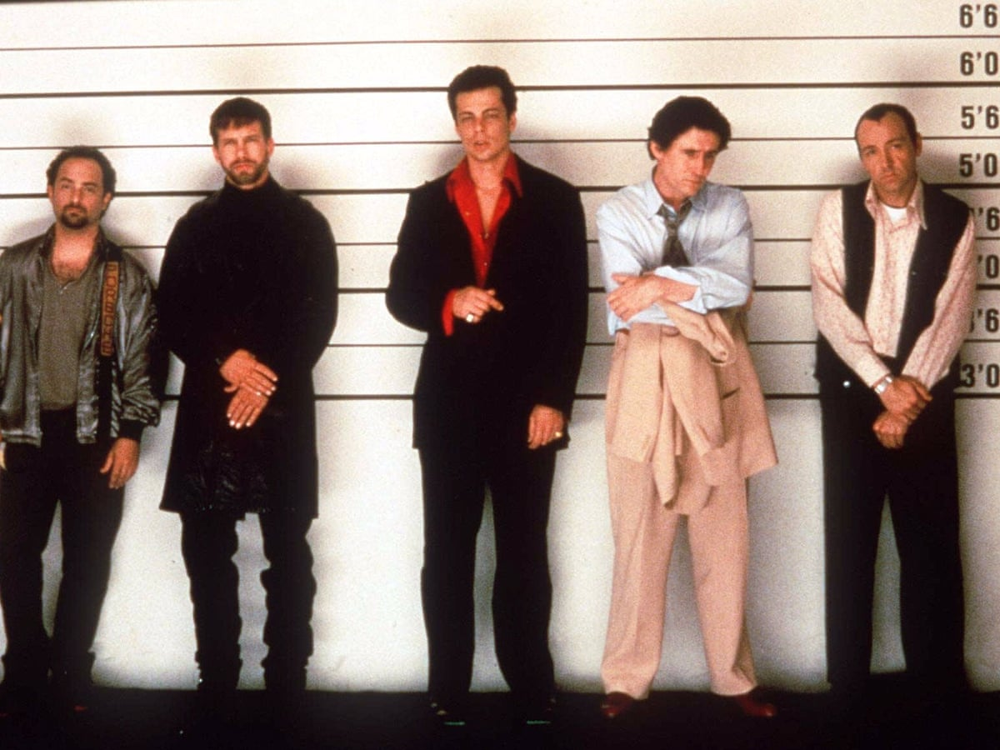
THE USUAL SUSPECTS
(1995)
Thriller/Mystery 8.5 89%
Director : Bryan Singer
Cast : Kevin Spacey, Stephen Baldwine, Gabriel Byrne, Chazz Palmiteri, Kevin Pollack
Famous Quote : "The greatest trick the devil ever pulled was convincing the world he did not exist. And like that... He is gone,"- Verbal
This film attains true greatness through its supernatural-horror-style backdrop who terrifies even the most hardened criminal. A big arises in everyone's mind.. "Who is Keyser Soze?"

CINEMA PARADISO
(1988)
Drama 8.5 89%
Director : Giuseppe Tornatore
Cast : Salvatore Cascid, Philippe Noiret, Marco Leonardi
Famous Quote : "Thank you for everything you've done for me."- Salvatore
This bittersweet film is a bit slow for teens, nut anyone with a true love of cinema who desn't mind some syruphy moments will be charmed.

THERE WILL BE BLOOD
(2007)
Drama/Epic 8.1 91%
Director : Paul Thomas
Cast : Daniel Day-Lewis
Famous Quote : "I drink your milkshake! I drink it up!"- Daniel
If America were a prison, then oil man Daniel Plainview (Daniel day-Lewis) is a vampire. It is a portrait of a terrible, rapacious man.

FARGO
(1996)
Thriller/Crime 8.1 94%
Director : Joel and Ethan Coen
Cast :
Famous Quote : "Prowler needs a jump"- Marge
This snowy crime comedy is the example of the 'crap criminal' subgenre. The characters are well-fleshed out and their tragedy is clear from beginning.

GONE WITH THE WIND
(1939)
Romance/War 8.1 91%
Director : Victor Fleming
Cast : Clark Gable, Vivien Leigh
Famous Quote : "I can't think about that right now. If I do, I'll go crazy. I'll think about that tomorrow."- Scarlett
Longest film to win best picture Oscar(nearly 4 hours). Comes to the screen as one of the truly great films.
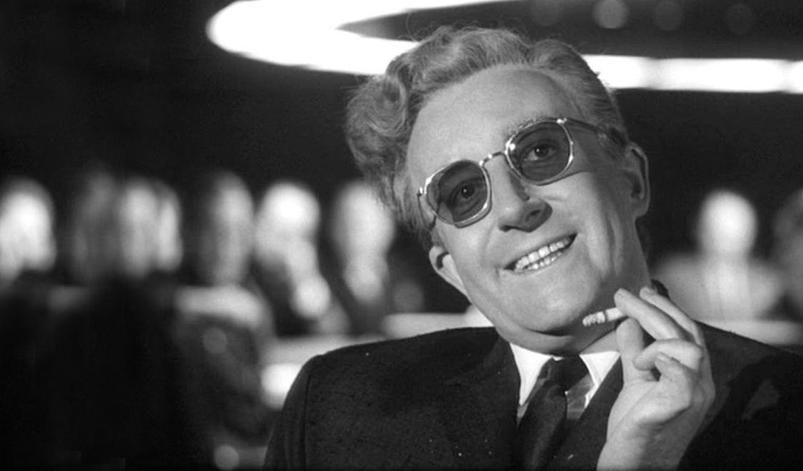
DR. STRANGELOVE
(1964)
Comedy/War 8.4 98%
Director : Stanley Kubrick
Cast : Peter Selles, George C. Scott, Sterling Hayden, Slim Pickens
Famous Quote : "Gentlemen, you can't fight in here! This is the War Room"- President Merkin Muffley
An American Brigadier puts the world on the verge of nuclear catastrophe when he deploys a B-52 bomber on the Russians without informing his superiors.
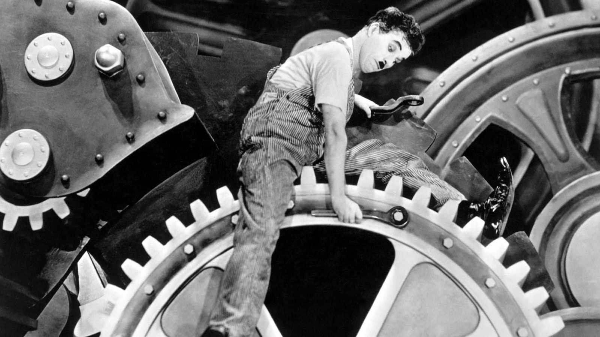
MODERN TIMES
(1936)
Comedy/Romance 8.5 100%
Director : Charlie Chaplin
Cast : Charlie Chaplin, Paulette Goddard
Famous Quote : [It's a Silent Movie]
This film is grand fun and sound entertainment, though silent. One of the many remarkable things about Charlie is that his films continue to hold up, to attract and delight audiences.

SE7EN
(1995)
Crime/Mystery 8.6 81%
Director : David Fincher
Cast : Morgan Freeman, Brat Pitt, Kevin Spacey
Famous Quote : "What's in the box?"- David Mills
A dark, gripping thriller which saves it's most shocking revelations for the final scenes. The studio was unhappy with the box scene but Brat and Morgan forced them to include that.
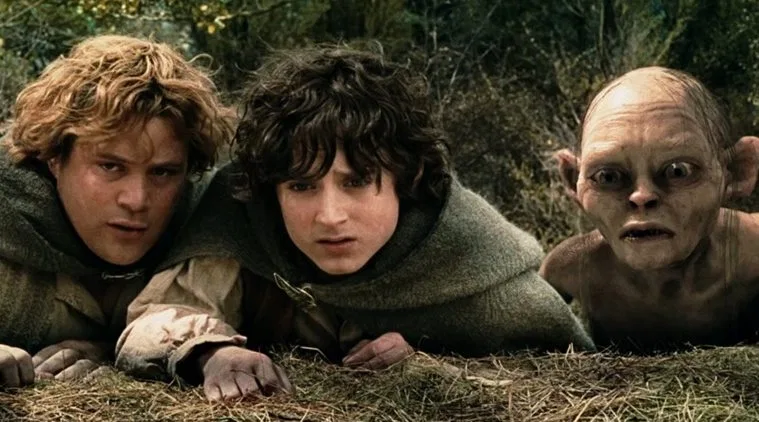
THE LORD OF THE RINGS : THE TWO TOWERS
(2002)
Fantasy/Adventure 8.7 95%
Director : Peter Jackson
Cast : Elijah Wood, Viggo Mortesen, Orlando Broom, Ian Mckellen
Famous Quote : "There won't be a Shire, Pip"- Merry
It starts and end in darkness. Pretty tell about the theme. It gives the pleasures of it is deeing Middle-Earth truly open out after the arrival at Rohan.

JURASSIC PARK
(1993)
Adventure/Sci-fi 8.1 91%
Director : Steven Spielberg
Cast : Sam Neill, Laura Dern, Jeff Goldblum
Famous Quote : "Hold on to your butts."- Ray Arnold
This film boasts Academy Award winning special effects, lots of frightful moments, and some good laughs.

TO KILL A MOCKINGBIRD
(1962)
Drama/Mystery 8.2 92%
Director : Robert Mulligan
Cast : Gregory Peck, Robert Duvall, Mary Badham, Phillip Alford
Famous Quote : "Shoot all the bluejays you want, If you can hit em', but remember it's a sin to kill a mockingbird."- Atticus
This Hollywood masterpiece offers crucial lessons about prejudice and the fears that motivate it. The scourge of racial hatred. It's based on a very famous novel of the same name.

TAXI DRIVER
(1976)
Drama 8.2 96%
Director : Martin Scorsese
Cast : Robert De Niro, Jodie Foster, Cybill Shepherd
Famous Quote : "You talkin' to me? You talkin' to me? You talkin' to me? Then who the hell else are you talking to... you talking to me? Well I'm the only one here."- Travis
Everyone here's at the top of their game : Scorsese, Schroder, De Niro, 14-year old Jodie Foster and composer Bernard Herrmann.

THE SHINING
(1980)
Horror/Mystery 8.4 85%
Director : Stanley Kubrick
Cast : Jack Nicholson, Shelley Dunall
Famous Quote : "All work and no play makes Jack a dull boy."- 'Jack Torrance
Kubrick's elegant adaptation of Stephen King's haunted-hotel story is often cited as The Scariest Horror Movie Ever Made. It is also least suitable to watch on father's day ever. If you haven't watched it, I'm telling you that Nicholson kept typing the same sentence over and over again.

TERMINATOR 2 : JUDGEMENT DAY
(1991)
Action/Sci-fi 8.5 93%
Director : James Cameron
Cast : Arnold Sch
Famous Quote : "Hasta la vista, Baby."- Terminator
It is really better than the original? In terms of scale and sheer, balls-out action spectacle, yes. This Terminator was just as much a student in human behaviour(with John Connor his teacher).
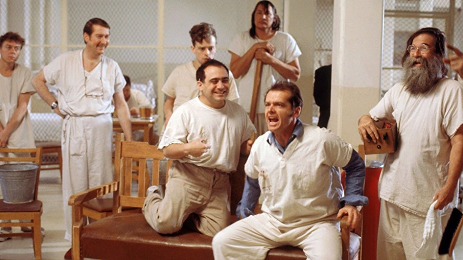
ONE FLEW OVER THE CUCKOO's NEST
(1975)
Drama/Comedy 8.7 94%
Director : Milos Forman
Cast : Jack Nicholson, Louise Fletcher, Will Sampson
Famous Quote : "You guys complain, how much you hate it here, and then don't even have the guts to leave! You're all crazy."- Randle
Brilliant Cinema Theatre. Jack stars in an outstanding characterization of Ken Kesey's asylum anti-hero.

THE MATRIX
(1999)
Action/Sci-fi 8.6 88%
Director : Andy and Lana Wachoweki
Cast : Keanu Reeves, Laurence Fishburne, Carrie-Anne Moss
Famous Quote : "We need guns, lots of guns."- Neo
The two sibling film makers opened up western audiences to the truth that kung-fu acrofatics are so much more fun than watching American or European muscle-men waving guns around.

INCEPTION
(2010)
Action/Thriller 8.8 87%
Director : Christopher Nolan
Cast : Leonardo De Caprio
Famous Quote : "What do you want from us?"- COBB
The big climactic action sequence is so huge it takes up almost half the movie and is actually three big action sequences temporally nested inside each other.
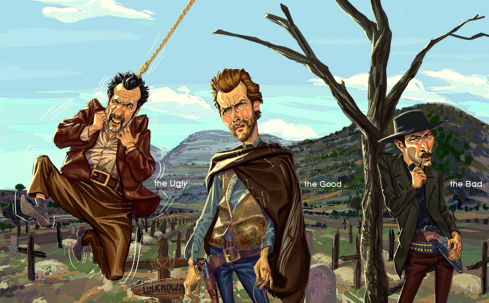
THE GOOD, THE BAD, THE UGLY
(1966)
Western 8.8 97%
Director : Sergio Leone
Cast : Clint Eastwood, Lee Van Cleef
Famous Quote : "When you have to shoot, shoot. Don't talk."- Tuco
It balances art and entertainment. Clint Eastwood and Lee Van Cleef are great value as Blondie and Angel Eyes. The director brilliantly displays his larger-than-life filmmaking style here.

THE LORD OF THE RINGS : RETURN OF THE KING
(2003)
Fantasy/Adventure 8.9 93%
Director : Peter Jackson
Cast : Elijah Wood, Viggo Mortensen, Ian Mckellen, Orlando Bloom
Famous Quote : "That still only counts as one."- Gimli
It has some of most colosal and entertaining battle scenes ever mounted. It has that fantastic dramatic - ironic twist when gollum saves the day through his own treachery.
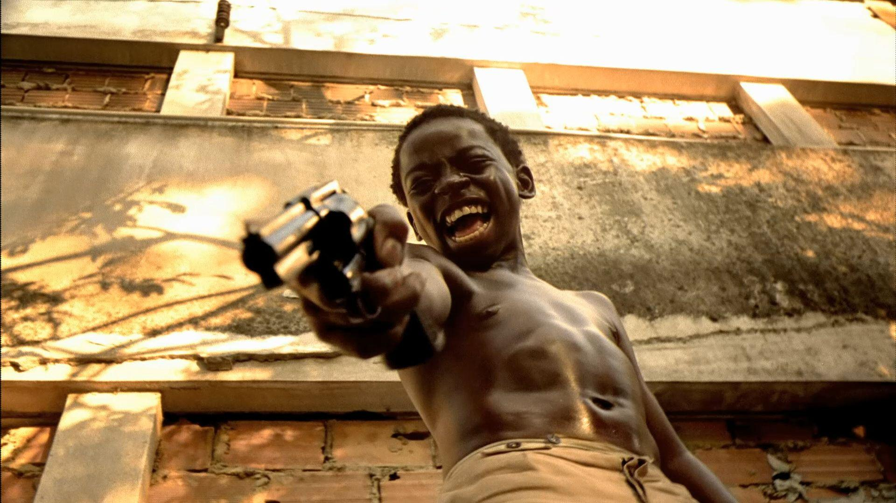
CITY OF GOD
(2002)
Crime/Drama 8.6 91%
Director : Fernando Meirelles
Cast : Alice Braga, Leandro Firmino, Seu Jorge
Famous Quote : "It was like a message from God : Honestly doesn't pay, Sucker"- Rocket
Difficult to watch but hard to look away from. The performances many from non-pros are terrific. It shows how kids are drawn into life of crime.

FIGHT CLUB
(1999)
Drama/Thriller 8.8 79%
Director : David Fincher
Cast : Brat Pitt, Edward Norton, Helena Bonham Carter
Famous Quote : "Welcome to Fight Club. The first rule of Fight Flub is : You do not talk about Fight Club. The second rule of Fight Club is : You do not talk about Fight Club"- Tyler Durden
As seems how dark and brutal it is, actually it is just funny. It has stunning visuals and a plot like nothing you have seen.

BLADE RUNNER
(1982)
Sci-fi/Thriller 8.1 90%
Director : Ridley Scott
Cast : Harrison Ford, Rutger Haver, Sean Young
Famous Quote : "Quite an experience to live in fear, isn't it? That's what it is to be a slave"- Batty
This is a deeply philosophical yet volent picture. It is formulaic but great looking. A Science Fiction Manhunt. Most of the film happens at night, thus creating its own stylish atmosphere.

LAWRENCE OF ARABIA
(1962)
War/Drama 8.2 98%
Director : David Lean
Cast : Peter O'Toole, Alec Guinness, Anthony Quinn, Omar Sharif
Famous Quote : "There may be honor among thieves, but there's none in politicians."- Lawrence
The movie that put both the "sweeping" and the "epic" into "sweeping epic" with its breathtaking depiction of T.E.Lawrence's (Peter O'Toole) Arab - uniting efforts against the German - allied Turks during W W I.
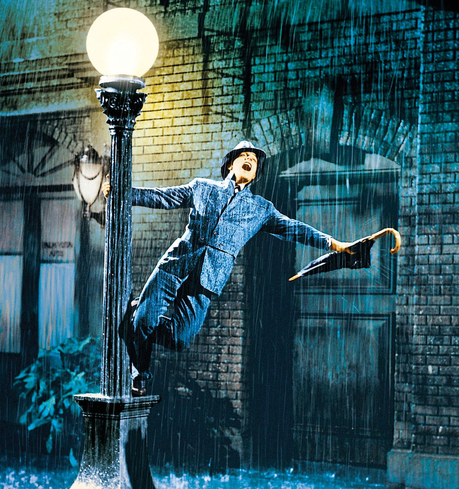
SINGIN' IN THE RAIN
(1952)
Musical/Comedy 8.2 100%
Director : Stanley Donen, Gene Kelly
Cast : Gene Kelly, Donald O'Connor, Debbie Reynolds
Famous Quote : "Lina. She can't act, she can't sing, she can't dance. A triple threat."- Cosmo Brown
A Little Gem. The unstoppable joy of the musical numbers especially with O'Connor. It is often considered as the finest musical of all time. It's incredibly funny and could have worked just as well without music.

THE SILENCE OF THE LAMBS
(1991)
Thriller/Horror 8.6 96%
Director : Jonathan Demme
Cast : Jodie Foster, Anthony Hopkins
Famous Quote : "A census taker once tried to test me. I ate his liver with some fava beans and a nice chianti."- Hannibal Lecter
The only Horror film to win best picture, director, adapted screenplay, actress and actor (for Hopkins' 25 min turn, 2nd shortest performance for trophy) .It feels like Foster's movie more than anybody's : her vulnerable-but-steely Clarice Starling is defined by her ability, not her gender.

FORREST GUMP
(1994)
Comedy/Drama 8.8 71%
Director : Robert Zemeckis
Cast : Tom Hanks, Robin Wright, Gary Sinise
Famous Quote : "My Momma always said,'Life was like a box of chocolates. You never know what you're gonna get'"- Forrest Gump
Most competitive Best Picture races in memory. Shawshank and Pulp Fiction also were nominated that year. Role by childlike eyes of the simple but successful Forrest - the role which earned Tom Hanks his second Oscar in two years. It has mindblowing CGI too.

IT'S A WONDERFUL LIFE
(1946)
Drama/Fantasy 8.6 94%
Director : Frank Capra
Cast : James Stewart, Donna Reed
Famous Quote : "Teacher says, every time a bell rings an angel gets his wings."- Zuzu/Bailey
No matter how often you see this perennial christmas favourite, you will be entranced. Flawless. By the way, James Stewart served in the World War.
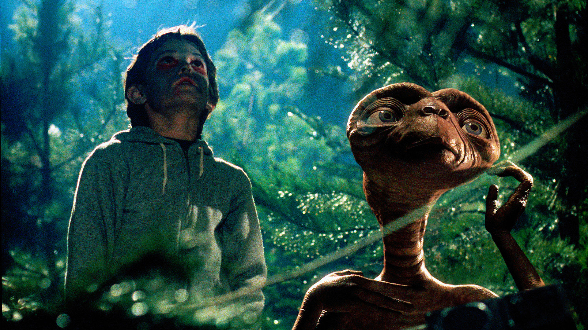
E.T.THE EXTRA TERRESTIAL
(1982)
Family/Sci-fi 7.8 98%
Director : Steven Spielberg
Cast : Henry Thomas, Drew Barrymore, Dee Wallace
Famous Quote : "Be good."- E.T
A beautiful exploration of unique friendship, special connection Elliott shares with the little E.T is precious. It is actually the best cinematic fairy tale since The Wizard of Oz.

JAWS
(1975)
Horror/Triller 8 98%
Director : Steven Spielberg
Cast : Roy Scheider, Richard Dreyfuss, Robert Shaw
Famous Quote : "You're gonna need a bigger boat!"- Chief Martin Brody
45 years young and Spielberg's breakthrough remains the touchstone for event-movie cinema. That's half monster-on-the-rampage disaster, half guys-bonding-on-a-fishing-trip adventure. Therefore it's genuinely unsurpassable.
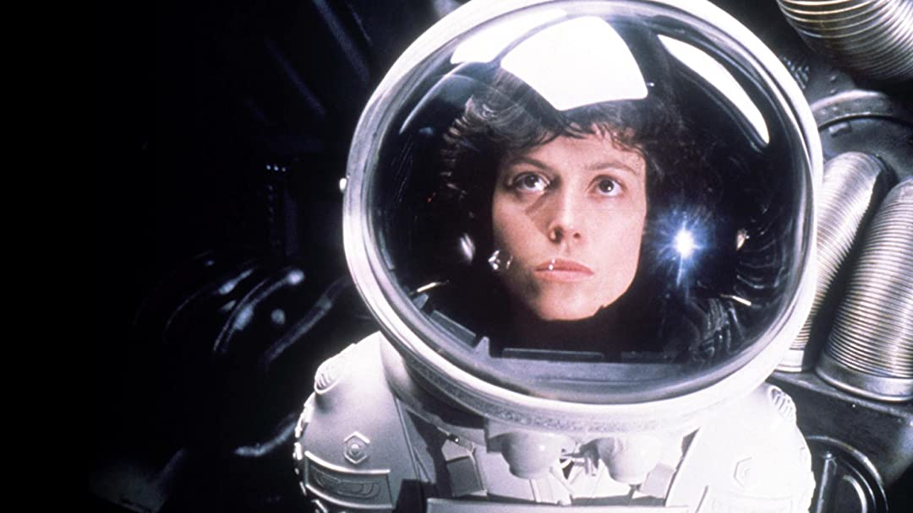
ALIEN
(1979)
Horror/Sci-fi 8.4 98%
Director : Ridley Scott
Cast : Sigourney Weaver, Tom Skerritt, Veronica Cart Wright, John Hurt
Famous Quote : "You are my lucky star. You... Lucky, lucky, lucky, lucky, lucky."- Ripley
It's a movie which can handle as many re-watches as you can throw at it. Ridley's deep-space monster-slasher makes you appreciate why he keeps coming back to that universe. When they shot the alien bursting-hurt's chest scene, the cast was not told what gonna happen, the horror on their faces were real.

APOCALYPSE NOW
(1979)
War/Drama 8.4 98%
Director : Francis Ford Cappola
Cast : Martin Sheen, Marlon Brando, Robert Duvall
Famous Quote : "I love the smell of napalm in the morning."- Kilgore
Hardly surprising, it's both a visually rich war movie and also a powerfully resonant journey into the darkest recesses of the human soul. During the shoot, Sheen got heartattack, Marlon got overweight, stormed destroyed most of the sets. Has a better film made from worse circumstances?
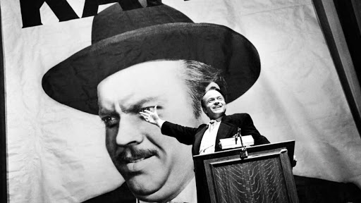
CITIZEN KANE
(1941)
Drama/Mystery 8.3 100%
Director : Orson Welles
Cast : Orson Welles, Joseph Cotten, Dorothy Comingore, Agnes Moorehead, Ruth Warrack
Famous Quote : "It isn't enough to tell us what a man did. You've got to tell us who he was."- Rawlson
Critics have hailed this for decades as "the greatest American movie ever made," But not all, especially young ones. Not only did he use impressive new film-making techniques at that time but its power corrupts story still resonates loudly. It is a triumph of the film, and proof of its solid value and of the sense of its director and all concerned, that a human touch is not lost.

2001 : A SPACE ODYSSEY
(1968)
Sci-fi/Adventure 8.3 93%
Director : Stanley Kubrick
Cast : Keir Dullea, Gary Lockwood, William Sylvester
Famous Quote : "This mission is too important for me to allow you to jeopardize it."-
It is arguably Kubrick's greatest gift to cinema, an infinitely ambitious vision of a space-facing future whose narrative centres on the most pivotal moment in human evolutin since some ape-man first bashed another ape-man with an old bone. Graceful, gorgeous, unwearied by time's passing. It was first outer-space movie to take outer space-- and special effects- seriously (Kubrick destroyed most of the sets so that no one use it further). Remember HAL 9000?

SCHINDLER's LIST
(1993)
War/Drama 8.9 97%
Director : Steven Spielberg
Cast : Liam Neeson, Ralph Fiennes, Ben Kingsley
Famous Quote : "Stern, if this factory ever produces a shell that can actually be fired, I'll be very unhappy."- Oscar Schindler
It is a emotionally wrenching black/white drama and heartbreaking kindness during the holocaust. There's no flaws to be found in his narrowing,(mostly) monochromatic depiction of Nazi persecution of the Jewish. It grabbed 7 Oscars : Spielberg's masterpiece, hands down.

INDIANA JONES : RAIDERS OF THE LOST ARK
(1981)
Adventure/Action 8.4 95%
Director : Steven Spielberg
Cast : Harrison Ford, Karen Allen
Famous Quote : "You want to talk to God? Let's go see him together, I've got nothing better to do."- Indiana Jones
Bond style adventure which is combo of Star Wars and Jaws starring the guy who played Han Solo, in which the bad guys are the evillest ever( the Nazis) and the MacGuffin is a big, gold box which unleashes the power of God).
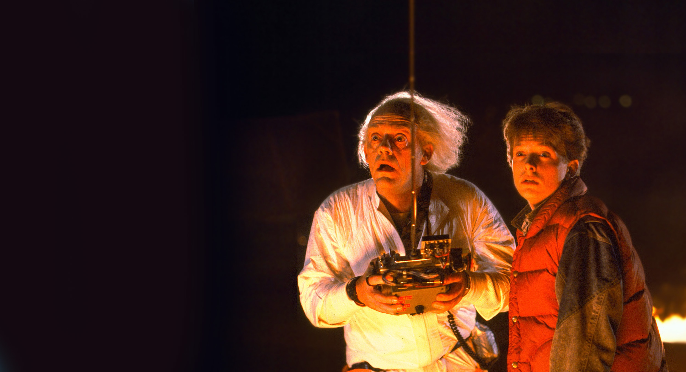
BACK TO THE FUTURE
(1985)
Sci-fi/Adventure 8.5 96%
Director : Robert Zemeckis
Cast : Michael Fox, Christopher Lloyd, Lea Thompson
Famous Quote : "If my calculations are correct, when this baby hits 88 miles per hour...you're gonna see some serious shit."- Doctor Emmett Brown
This movie still manages to be timeless despite being so rooted in, well time.And it might just have the best title of anything on this entire list.If you don't like it,it is difficult to believe you like films at all.

THE LORD OF THE RINGS : THE FELLOWSHIP OF THE RING
(2001)
Fantasy/Adventure 8.8 91%
Director : Peter Jackson
Cast : Elijah Wood, Ian Mckellen, Viggo Mortensen, Orlando Bloom
Famous Quote : "You cannot pass! I am a servant of the secret fire, wilder of the flame of anor. The dark fire will not awail you, flame of valun go back to the shallow you shall not pass"- Gandalf
It isn't a fairytale but a historical epic which just happens to be set in an alternative world. Masterfully paced, the movie builds slowly, introducing the mythology, habitats and lifestyles of Tolkien's creatures.
GOODFELLAS
(1990)
Crime/Drama 8.6 96%
Director : Martin Scorsese
Cast : Ray Liotta, Robert De Niro, Joe Pesci
Famous Quote : "For as long as i can remember i always wanted to be a gangster.To me that was better than being the president of the United States to be a gangster was to own the world"- Henry Hill
Complex, volatile, ironic and disquieting, Scorsese's Goodfellas is a masterly achievement in intense observation. An incredible, relentless experience about the singleminded pursuit of crime.

CASABLANCA
(1942)
Romantic/War 8.5 99%
Director : Michael Curtiz
Cast : Humphrey Bogart, Ingrid Bergman
Famous Quote : "Here's looking at you, kid"- Rick
This movie has a variety of moods, action, suspense, comedy and drama. What you else need for a successful film when you already have a literate script, stylish director a great song and the amazing climax.
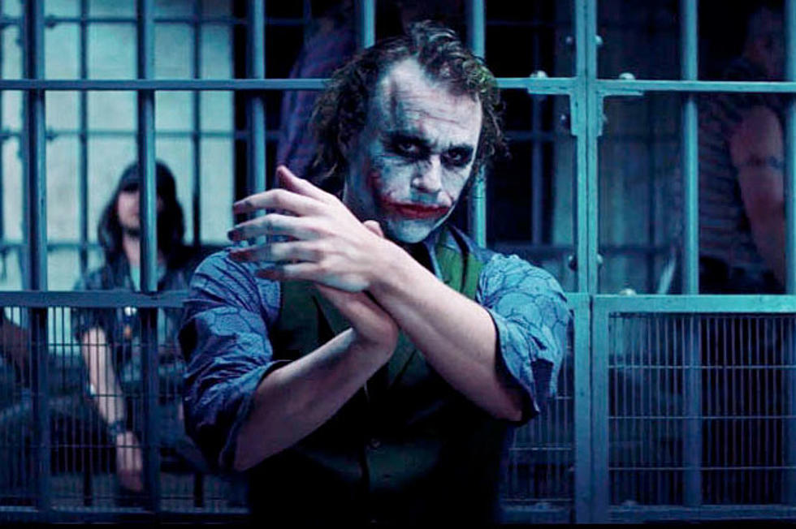
THE DARK KNIGHT
(2008)
Action/Adventure 9 94%
Director : Christopher Nolan
Cast : Christian Bale, Heath Ledger
Famous Quote : "Some people just want to watch the world burn"- Alfred Pennyworth
Christopher Nolan's batman begins sequel works wonders because he never saw it as a superhero film. You get a bloke dressed as a bat and a psychotic clown in a police interrogation room. Ledger's performance is monumental, but The Dark Knight lives up to it and the Batbike is kinda cool, too.

THE WIZARD OF OZ
(1939)
Fantasy/Music 8 98%
Director : Victor Fleming
Cast : Judy Garland, Ray Bolger, Jack Haley
Famous Quote : "Lions and Tigers and bears oh my! "- Dorothy
This movie always makes you feel alive. It is a must see film for the young and old. An absolute masterpiece whose groundbreaking visuals and deft storytelling are still every bit as resonant. Eighty-one years on, it hasn,t dated in the slightest. In truth, any opportunity to see the film on the big screen is welcome. Judy Garland is perfectly cast as Dorothy.

PULP FICTION
(1994)
Comedy/Crime 8.9 9%
Director : Quentin Tarantino
Cast : John Travolta, Samuel L. Jackson, Uma Thurman, Quentin Tarantino
Famous Quote : "If my answers frighten you then you should cease asking scary questions"- Jules
If reservoir dogs was a blood-shattered callin card, space pulp fiction saw Quentin kick a front door off its hinges and then get applauded for doing it with such goddamn panache. The movie was shocking, funny and blazingly original. It's full of perfect Tarantino moments, with meta references, B-movie sleaze and a sheer sense of fun.

STAR WARS :THE EMPIRE STRIKES BACK
(1980)
Sci-fi/Action 8.7 94%
Director : Irvin Kershner
Cast : Mark Hamill, Harrison Ford, Carrie Fisher
Famous Quote : "No i am your father"- Darth Wader
The strongest of the saga not because enemies or the twist but it deepens the core relationships(Han and leia's)she loves him,he knows and it still hurts. The hero loses a hand but gains a father somewhat a shakespearean tragedy. It displays the same soaring imagination that made Star Wars a filmmaking classic; most other space movies seem clunky and earthbound in comparison.
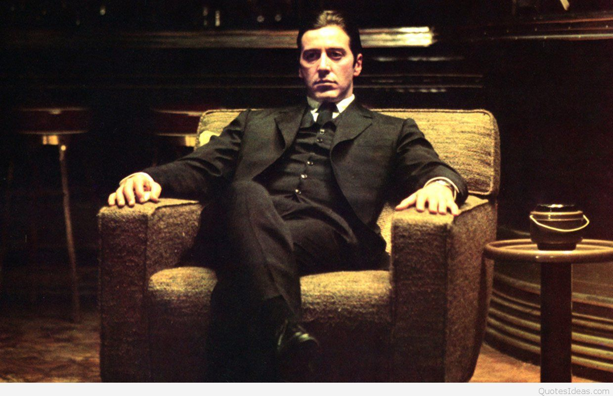
THE GODFATHER : PART 2
(1974)
Crime/Drama 9 98%
Director : Francis Ford Coppola
Cast : Al Pacino, Robert De Niro, Robert Duvall, Diane Keaton
Famous Quote : "There are many things my father taught me here in this room. He taught me:"- Keep your friends close but your enemies closer Michael Corleone
Which Godfather is greater arguments are always there in this film every element of cinema is working at the highest level this is often cited as the greatest ever sequel.This is a story of Al Pacino's consolidation of power with ascendence of his dad Robert De niro veto entertaining. The film is richer in texture and gives more evidence of social awareness.

THE SHAWSHANK REDEMPTION
(1994)
Drama/Crime 9.3 90%
Director : Frank Darabont
Cast : Morgan Freeman, Tim Robbins, Bob Gunton
Famous Quote : "Remember Red,Hope is a good thing,maybe the best of things,and no good thing ever dies."-
It was a box-office flop on release the warm leathery embrace of Morgan freeman's narration... few directorial debuts are so deftly constructed;frank has top it. This is an engagingly simple, good-hearted film, with just enough darkness around the edges to give contrast and relief to its glowingly kinded view of human nature. Freeman, who is simply a great actor, a man who has never struck a false note in his carrer, both narrates this tale and anchors it with authoritative playing.

THE GODFATHER
(1972)
Crime/Drama 9.2 98%
Director : Francis Ford Coppola
Cast : Marlon Brando, Al Pacino, James Caan, Robert Duvall, Diane Keaton, Talia Shire
Famous Quote : "I'm gonna make him an offer he can't refuse "- Don Corleone
It came as Mario Puzo's novel. Its a film that does it all. Stanley Kubrick described it as "Possibly the greatest movie ever made". It is a juncture between classic and modern cinema. Not a dry, cinematic relic that you feel obliged to bow before, but a not-blooded living god that you embrace. The modernism, meanwhile is felt not only in its squib-heavy bloodletting, but also the way it handles the gangster flick itself.
That theme, of course, being brilliantly embodied by Al Pacino as Michael Corleone : The W W II hero, determined to stay distant from his Dad's dodgy business but who ultimately becomes enwrapped in its soul-tainting shadows. Brando may get the most attention as the wheezing Don, but there's no denying this is really Pacino's show.